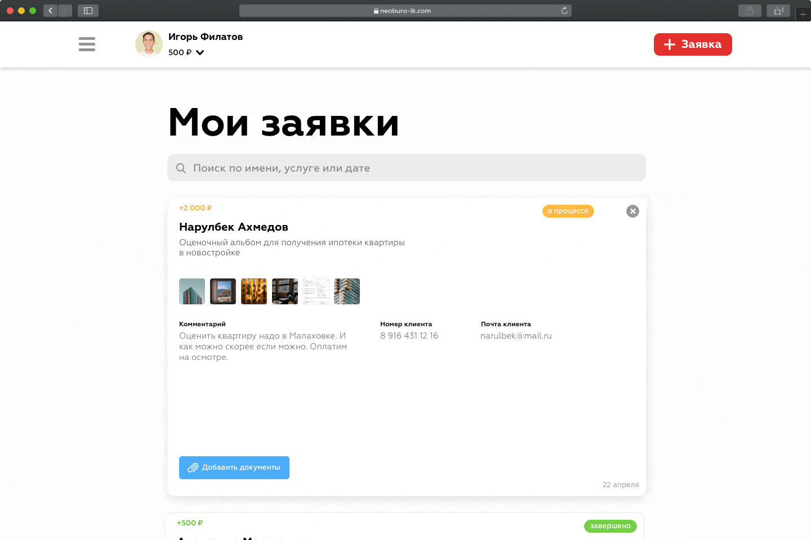
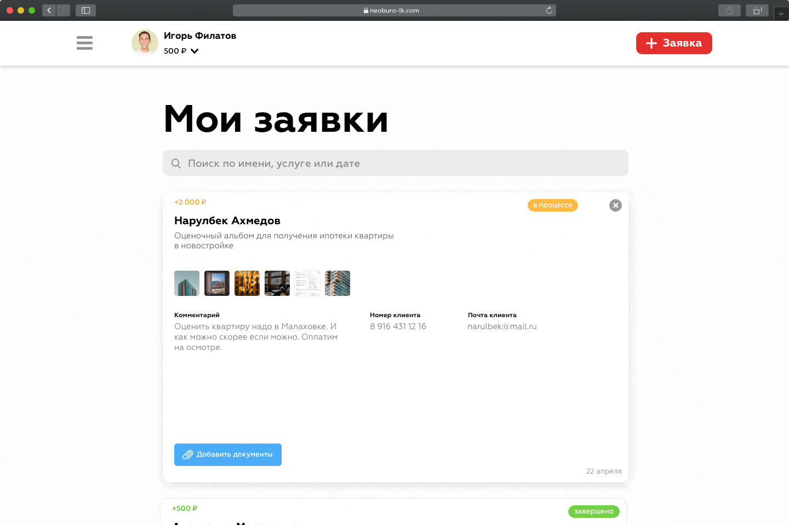

Разработка интерфейсов и промо страницы
Компания НЭО-Бюро занимается независимой оценкой и экспертизой всех видов имущества. А личный кабинет это их сервис, в котором партнеры бюро оставляют заявки на нужные услуги и получают за это вознаграждения.
Ограничения
Личный кабинет новый продукт на рынке оценки и экспертизы. И только время сможет подтвердить его рентабельность. Поэтому функциональность продукта нужно было свести к финансовом ограничениям.
Создание заявок
В личном кабинете можно легко и быстро оставлять заявки на нужные услуги, загружать необходимые фотки и документы и вводить данные клиента.

Мои заявки
Все созданные заявки находятся в одном месте. Их удобно контролировать и проверять готовность. Также, можно добавлять новые файлы.
 

Мобильность
Многие партнеры НЭО-Бюро часто совершают сделки в полях. Поэтому для них интерфейс личного кабинета спроектирован так, чтобы им было удобно пользоваться на смартфоне.


Промо страница
Также, была задизайнена страница, на которой понятно рассказывается про все преимущества личного кабинета.